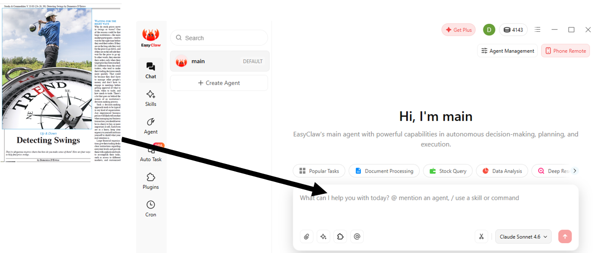
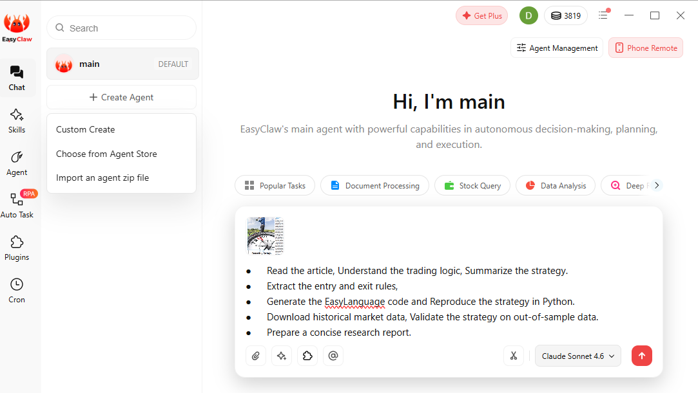
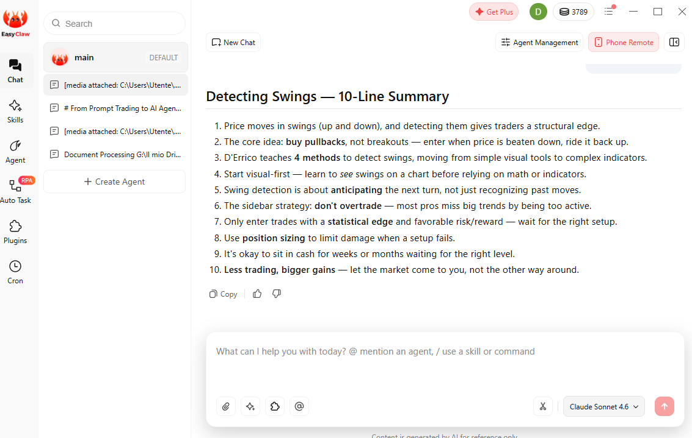

From Prompt Trading to AI Agents
In my July 2026 Stocks & Commodities article Prompting the Markets, I introduced the idea of prompt trading. The idea was simple: combine ChatGPT with Google Colab to transform a trading idea into executable code. Instead of starting from a blank page, traders could use AI to accelerate coding, testing and research.
It was an important step forward. However, the process was still highly manual. Every stage required human intervention: writing prompts, generating code, fixing errors, downloading data, launching notebooks and organizing the results.
Today, AI agents are changing that workflow. Rather than answering a single question, they are designed to execute multi-step tasks while keeping the overall objective in mind.
The Experiment
For this experiment, I decided to use one of my own previously published March 2017 Stocks & Commodities articles, Detecting Swings. I wanted to evaluate whether an AI agent - in this case, EasyClaw - could reproduce a complete quantitative research project starting from a published paper.
The assignment was straightforward:
- Read the article.
- Understand the trading logic.
- Summarize the strategy.
- Extract the entry and exit rules.
- Generate the EasyLanguage implementation.
- Reproduce the strategy in Python.
- Download historical market data.
- Validate the strategy on out-of-sample data.
- Prepare a concise research report.

Why This Matters
This is the fundamental difference between a chatbot and an AI agent. A chatbot answers one question at a time. An AI agent manages a workflow, moving from one task to the next while keeping the final objective in focus.
For quantitative research, this distinction is significant. Developing a trading strategy is rarely about writing code alone. It requires understanding the original idea, translating it into precise rules, validating assumptions, reproducing results and deciding whether the strategy deserves further investigation.
In this experiment, EasyClaw orchestrated the entire workflow by combining document analysis, code generation, testing and reporting.
The objective is not to replace the researcher. Financial research still requires human judgment.
Researcher Judgment Still Matters
A small implementation mistake can completely change a backtest, and apparently impressive results may disappear after a proper out-of-sample validation.
Instead, AI agents have the potential to eliminate much of the repetitive work, allowing researchers to spend more time asking better questions, designing better experiments and critically evaluating the evidence.

The First Response
What impressed me most was not the code generation, but the first response. EasyClaw immediately identified the core components of the trading methodology and produced a structured summary of the strategy before attempting to write any code.
That first output was encouraging. Before generating a single line of code, the AI agent demonstrated that it had understood the problem it was asked to solve.

What Comes Next
In the next articles, we will examine each stage of the workflow in detail:
- How accurately the strategy was summarized.
- The EasyLanguage implementation.
- The Python implementation.
- The out-of-sample validation.
- The performance report.
- Whether the published research can be successfully reproduced using AI agents.
This series is not intended to demonstrate that AI can replace quantitative researchers.
Rather, it explores whether AI agents can become reliable research partners, helping traders spend less time on repetitive tasks and more time evaluating ideas.
Read More TradingAlgo Research
Explore the full publication archive for articles on technical analysis, portfolio construction, AI-assisted research and systematic trading.
Back to Publications